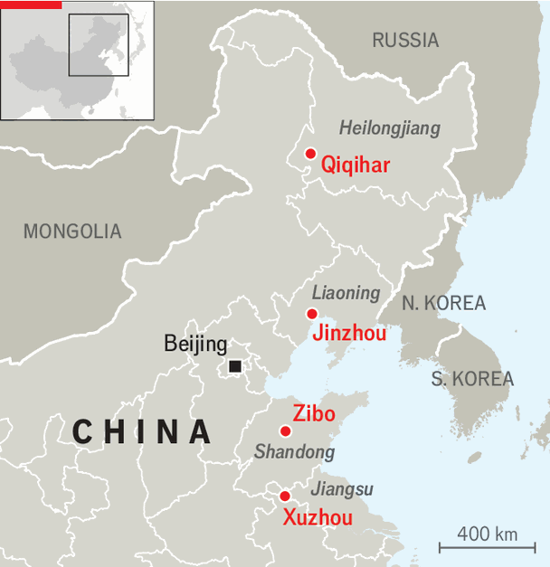

The serious, rivalrous business of Chinese barbecue
Some cities say they’ve been eating kebabs since the Han dynasty

Sep 3rd 2026
STEP ASIDE, Texas. The Chinese city of Qiqihar is laying claim to the global barbecue crown. Located in the country’s far north-east, it recently concluded a barbecue festival, inviting the world to enjoy its flavour. Banners across the city of 4m assert it is the “international barbecue capital”. That is a big claim for a place few outside China have heard of and equally few could pronounce (roughly, chee-chee-har).

Qiqihar’s real beef is not with Texas brisket or Aussie snags but with other Chinese cities. Barbecue has become a big business in recent years. The grilling industry nationwide was worth around 270bn yuan ($40bn) in 2025. Several cities are vying for the thickest cut of that total. Qiqiharians make a good case. Their region has some of China’s largest grazing pastures. In the summer locals sit on the streets and toss tasty beef on coal-fired grills along with onions and sauerkraut. They are adamant that their meat is the best in China and that they have the figures to prove it. Between 2020 and 2025 the city’s beef sales grew from around 5bn yuan to 30bn.
The biggest challenge to Qiqihar has come from Zibo, a city in eastern China specialising in meat skewers. In 2023 its barbecue stalls became a hit travel destination. Tourism income grew by 70% compared with the year before. Local officials were quick to support the trend. Banks were encouraged to hand out “barbecue loans” to help budding entrepreneurs source mutton and set up stalls. Accommodation became so scarce the government imposed price controls.
The craze in Zibo ignited a bigger barbecue battle. Jinzhou, another north-eastern town, has claimed for years to be China’s pork-skewer capital. When its officials saw Zibo’s success, they sent a delegation to figure out how best to bank their own shanks. Residents in Xuzhou, another eastern city, believed their meat-grilling tradition to be much older than Zibo’s and more deserving of tourist spending. Stone carvings from 2,000 years ago purportedly show people eating meat on sticks. Local netizens claimed Zibo had pilfered their heritage.
China’s summer travel spots often go viral on social media but quickly fade. Zibo has struggled to maintain excitement over its delicacies. Its heavy investments in grilling have reportedly led to many failed vendors. Meanwhile Qiqihar now supplies a network of restaurants across the country, which sell the region’s beef and thus support its economy. Qiqihar may not pose a threat to Texan pitmasters but it has a healthy claim on China’s cookout capital. ■
Subscribers can sign up to Drum Tower, our new weekly newsletter, to understand what the world makes of China—and what China makes of the world.